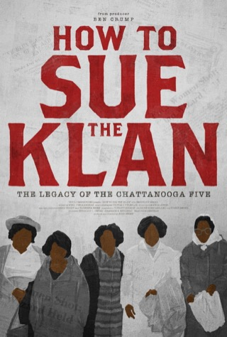

Screening event · Double Exposure 2024
Shorts: Reframing the South (DX Reel South Award Finalists)
Saturday, November 9, 2024 · 12:00 PM · Martin Luther King Jr. Memorial Library
The finalists for the DX Reel South Award present a dynamic and nuanced view of the American South, challenging stereotypes and broadening perspectives through powerful storytelling. These short documentaries explore the beauty and complexities of Southern life—its culture, history, and ongoing struggles—revealing a rich tapestry of untold narratives that invite audiences to see the South in a new light.
Films discussed
- American Grail: A Quest for the Ivory-Billed WoodpeckerAndy Sarjahani2024 · 16 min

How to Sue the KlanJohn Beder2024 · 35 min Prelude of a StoryAshley Salman2024 · 17 min
Prelude of a StoryAshley Salman2024 · 17 min Expression of IllnessBryn Silverman2024 · 21 min
Expression of IllnessBryn Silverman2024 · 21 min
Sources
Related sessions
- 2024 · Thu Nov 7 · 11:30 AMPanel · DX²Generative AI: Toward Best Practices in Documentary ProductionRachel Antell, Justine Bateman, Brandon Butler, Daniel Freed, Graham Sack
- 2024 · Thu Nov 7 · 1:30 PMPanel · DX²Cross Country: Unpacking Regionalism in Documentary FilmmakingAaron Asbury, Laura Deutch, Ryan Pearson, Ouida Washington, Nick Price
- 2024 · Fri Nov 8 · 10:45 AMPanel · DX²Personal Stories, Universal Impact: The Power of Investigative FilmmakingGerad Argeros, Debra Aroko, Erika Cohn, Emma D. Miller, Rajal Pitroda, Russell Leigh Sharman, Russell Leigh Sharman
- 2024 · Sat Nov 9 · 10:00 AMWorkshopWorkshop: Backpack Journalism for FilmmakersBill Gentile
- 2024 · Sat Nov 9 · 10:00 AMWorkshopWorkshop: Self-Care for Filmmakers: The Trauma Aware ToolkitJudith Matloff
- 2023 · Thu Nov 2 · 2:15 PMPanel · DX²The Art of Visual NewsReema Akkad, Erica Berenstein, Rozina Breen, Margaret “Mishi” Ebrahim
- 2025 · Thu Oct 30 · 1:00 PMPanel · DX²Fog of Falsehood: Disinformation, AI, and the Battle Over RealityGaia de Simoni, Eugene Jarecki, Ben Loeterman, Nick Quested, Kate Stonehill, Zach Toombs
- 2025 · Thu Oct 30 · 2:15 PMPanel · DX²Race in Real TimeAnurima Bhargava, Byron Hurt, Laura Dyan Kezman, William Howell, Natalie Bullock Brown